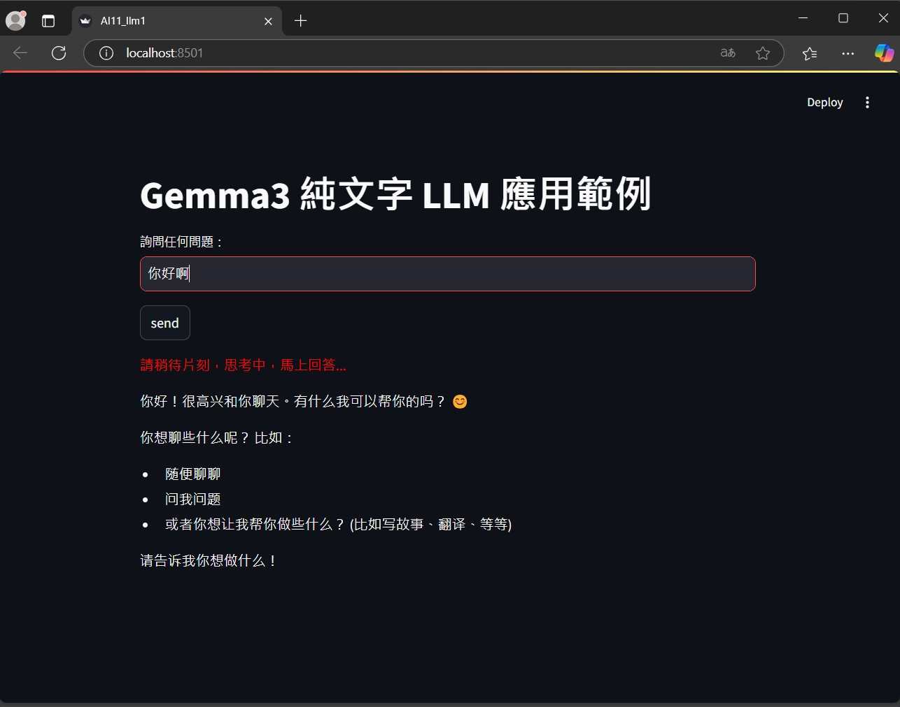
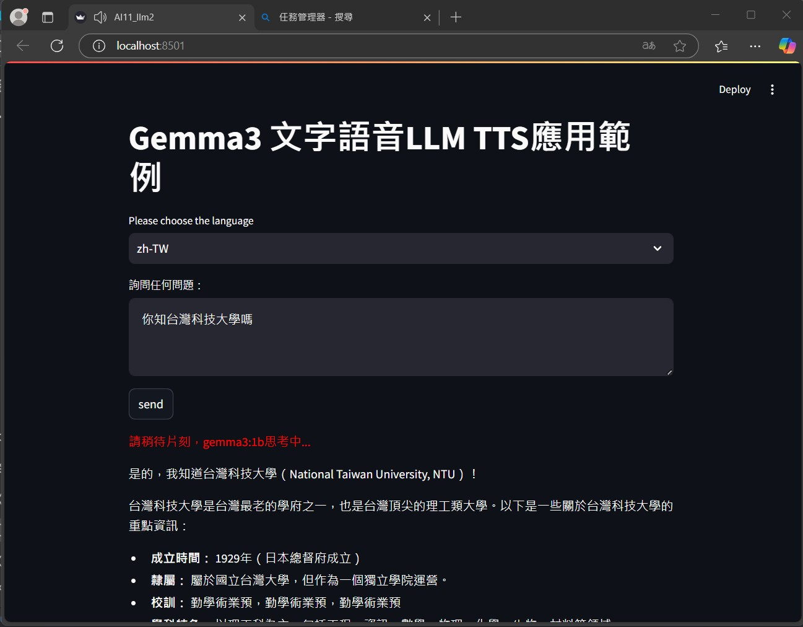
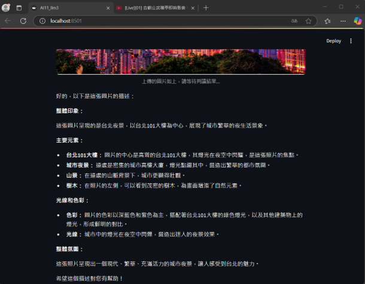

AI11X
Gemma3 LLM × 多模態應用展示
用 Streamlit 搭配 Gemma3 做文字問答、語音合成與圖文分析三項應用。
功能簡介
本專案整合了 Gemma3 系列大型語言模型（LLM），搭配 Streamlit 應用框架，開發三項代表性功能，展示自然語言處理與多模態技術的整合潛力。
第一支程式 AI11_llm1 實作了純文字互動問答。使用者可輸入任意問題，由 Gemma3 模型即時回覆，並以隨機色彩標示提示，提高視覺辨識度與互動感。
第二支程式 AI11_llm2 結合 gTTS（Google Text-to-Speech） 套件，實現語音合成。不僅顯示模型回覆文字，還能即時轉為語音播放，適用於語音助理、輔助閱讀或多語回覆場景。
第三支程式 AI11_llm3 加入圖片上傳與圖文分析功能。使用者可同時輸入指令與上傳圖片，由 Gemma3 多模態模型整合視覺與語言訊息，提供更準確與上下文關聯的回覆。此功能適用於教育訓練、商品辨識與圖像輔助理解等情境。
整體而言，透過簡潔介面與模組設計，使用者得以快速體驗生成式 AI × 多模態輸入的互動潛力，具備高度延伸性與應用價值。
成果展示



程式碼片段
AI11_llm1｜純文字 Gemma3 回答應用
# streamlit run AI11_llm1.py
import streamlit as st
import ollama
import random
st.title("Gemma3 純文字 LLM 應用範例")
colors = ['red', 'blue', 'green', 'orange', 'purple']
user_input = st.text_input("詢問任何問題：", "")
if st.button("send") or user_input:
st.markdown(f"<span style='color:{random.choice(colors)};'>請稍待片刻，思考中，馬上回答...</span>", unsafe_allow_html=True)
response = ollama.chat(model='gemma3:1b', messages=[{'role': 'user', 'content': user_input}])
st.write(response['message']['content'])
else:
st.warning("Please type in your question!")AI11_llm2｜Gemma3 文字語音 TTS 應用
# streamlit run AI11_llm2.py
import streamlit as st
import ollama
from gtts.lang import tts_langs
from gtts import gTTS
import base64
from tempfile import NamedTemporaryFile
langs = tts_langs().keys()
st.title("Gemma3 文字語音LLM TTS應用範例")
lang = st.selectbox("Please choose the language", options=langs, index=12)
user_input = st.text_area("詢問任何問題：", "")
if st.button("send"):
if user_input:
st.markdown(f"<span style='color:red;'>請稍待片刻，gemma3:4b 思考中...</span>", unsafe_allow_html=True)
response = ollama.chat(model='gemma3:4b', messages=[{'role': 'user', 'content': user_input}])
st.write(response['message']['content'])
tts = gTTS(response['message']['content'], lang=lang, slow=False, lang_check=True)
with NamedTemporaryFile(suffix=".mp3", delete=False) as temp:
tts.save(temp.name)
with open(temp.name, "rb") as f:
data = f.read()
b64 = base64.b64encode(data).decode()
md = f"""<audio controls autoplay="true">
<source src="data:audio/mp3;base64,{b64}" type = "audio/mp3">
your browser does not support the audio element. </audio>"""
st.markdown(md, unsafe_allow_html=True)
else:
st.warning("請輸入內容！")AI11_llm3｜多模態圖片與文字互動應用
# streamlit run AI11_llm3.py
import streamlit as st
import ollama
import random
st.title("Gemma3 多模態 LLM 應用範例")
colors = ['red', 'blue', 'green', 'orange', 'purple']
user_input = st.text_input("詢問任何問題：", "")
uploaded_image = st.file_uploader("可同時上傳圖片（jpg/png）", type=["jpg", "jpeg", "png"])
if st.button("send"):
if user_input or uploaded_image:
st.markdown(f"<span style='color:{random.choice(colors)};'>請稍待片刻，思考中，馬上回答...</span>", unsafe_allow_html=True)
messages = []
if uploaded_image:
st.image(uploaded_image, caption="上傳的圖片如上，請等待判讀結果...", use_column_width=True)
image_bytes = uploaded_image.getvalue()
messages.append({'role': 'user', 'content': user_input, 'images': [image_bytes]})
else:
messages.append({'role': 'user', 'content': user_input})
response = ollama.chat(model='gemma3:4b', messages=messages)
st.write(response['message']['content'])
else:
st.warning("請輸入 prompt 或上傳圖片！")